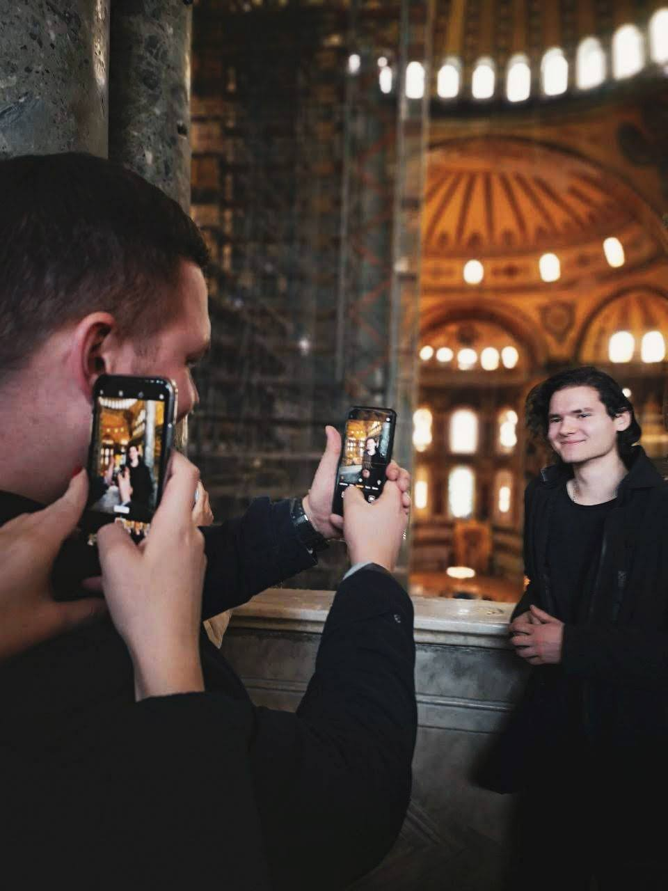
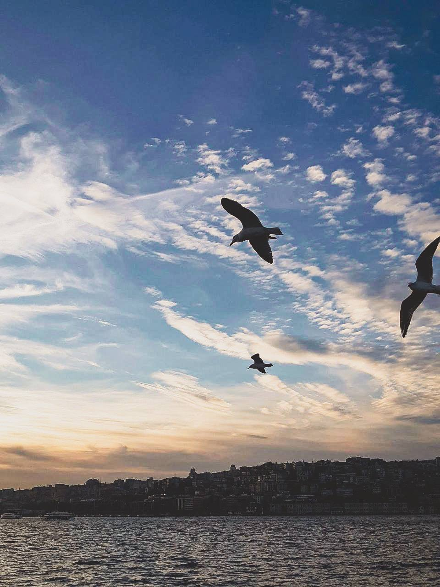

Журба Микола Андрійович
Київ, 04.01.2000
Ліцей "Наукова Зміна" -> КПІ
- Мобільна фотографія
- Кінематограф
- Спорт
- Книги - серія детективів Ю Несбе про Харрі Холле
- Фільм - "Southpaw"
- Мультсеріал - "Over the Garden Wall"
- Мультсеріал - "Star vs. the Forces of Evil"
- Серіал - "Anne with an E"
Більш за все мені сподобалося бути в Стамбулі. Місто має європейську та азіатську частини, і перебратися туди-сюда можна на паромі, який коштую не надто дорожче, аніж проїзд у нашому метро.


Istanbul Wikipedia